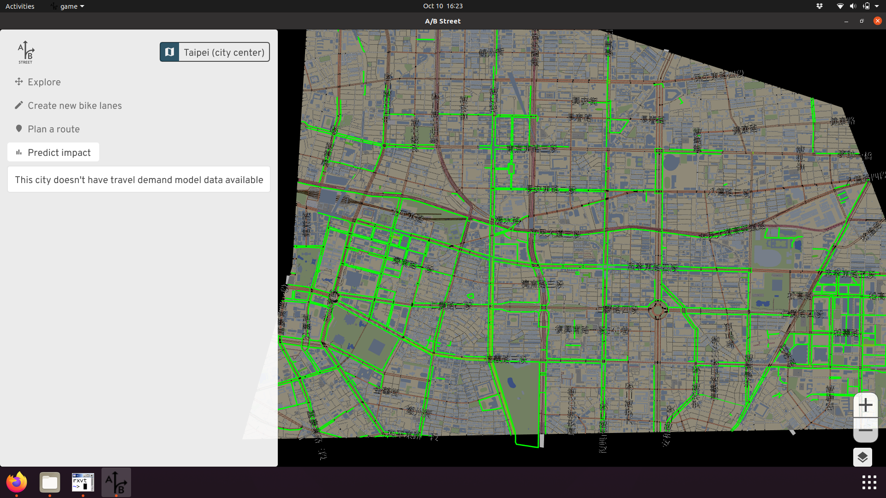

Technical details
This document summarizes how the Ungap the Map tool works. The tool is just one piece of the A/B Street platform, which has much more technical documentation.
System overview
A/B Street is generally organized into 3 layers. The lowest is the map model, which represents the transportation network of some portion of a city. This model combines the geometry of roads and intersections, routing for different vehicle types, and semantics like turn restrictions, parking, traffic signal timing, and land use patterns. In some regions, there's also a travel demand model describing the trips that people regularly make. Lane configuration, intersection control policy, and access restrictions can all be changed in real-time (usually sub-second). You can think of the map model along with the travel demand as a digital twin of the city, at least from a transportation perspective.
A map and travel demand scenario are just files covering some manually-drawn boundary. The map has "borders" along the boundary, and the travel demand model can describe trips beginning or ending off-map somewhere. There's a complex process to generate a map, pulling in and heavily processing data from OpenStreetMap, different travel demand sources, city-specific datasets about parking, and elevation. All of the datasets are public. This process works for any city with sufficient OpenStreetMap coverage, but it still takes lots of work to improve the imported map. Many cities have already been imported and stored in Amazon S3; most users will never need to perform this process themselves.
The next layer is a 2D rendering and user interface library, written from scratch on top of OpenGL. These libraries have common code for interacting with the map in many ways, and managing things like downloading files for new cities. There's also a traffic simulation in this layer, although the bike network tool doesn't use it. Everything in A/B Street is written in Rust. One advantage of this is that everything can run either natively on Mac, Windows, or Linux, or be compiled to WebAssembly and run in web browsers without any installation.
Finally, the third layer consists of user-facing apps that make use of everything. The bike network tool lives here, alongside tools that're focused on related topics like 15-minute neighborhoods and low-traffic neighborhoods.
Sharing proposals
When the user adds bike lanes to some roads, all of the changes are saved locally as a JSON file. Since the tool's goal is for people to communicate about their ideas and spread the word, there has to be some way for them to share these files. This could be done manually by email or something else, but that would be really painful. So the software can upload the files to a central server, and people can just share a URL to download the file later.
Ideally, this feature would include a proper user account system, where people can sign up, modify their proposals, and maybe even share comments or feedback about other proposals. There are many technical and design challenges with this -- for example, how to prevent abusive users from posting rude comments? In the long-term, this is worth tackling, with careful design to facilitate useful interactions.
But to get something working in the meantime, the JSON proposals can just be shared anonymously. They're uploaded to a central server, which returns a URL to share. Somebody else can load the proposal with that URL. Everybody remains anonymous; it's impossible to prove who uploaded a proposal, or to edit or delete it. The central server is a simple Go API hosted in Google App Engine, storing files in Google Cloud Storage, and using MD5 checksums to identify and de-duplicate proposals.
Routing
Unsurprisingly, A/B Street uses
Dijkstra's algorithm to
find paths. The interesting details are how the graph's edge weights are set for
bicycles. The weights are expressed in units of time, guessing how long it'll
take the typical cyclist to cross a road or turn through an intersection. This
is usually just distance / speed. The speed accounts for elevation, and
the calculation
is adapted from the Valhalla routing engine. See the
vehicle_cost method
for specifics.
Additionally, the user can specify preferences to avoid steep hills or stressful roads. Steep hills are defined as having over 8% incline, and when one is encountered, the cost to cross it is multiplied by 2. Note this multiplication happens after adjusting the typical biking speed to account for the incline. Stressful roads are similar -- if a road is classified as an arterial or highway and lacks bike lanes, the edge weight is multiplied by 2. There are many possible ways to tune these parameters; the current implementation is simple, but produces results that match personal experience around Seattle.
Note the mode shift calculation instead uses contraction hierarchies, which require an expensive one-time preparation step, but answer queries much faster than Dijkstra's. On most of the Seattle maps, the travel demand models require at least 100,000 paths!
Adding bike lanes
The user can edit an individual road segment in detail, configuring individual lane widths. But of course this is really tedious, so most people will probably use this tool to automatically add lanes to an entire path at once. This tool shouldn't require the road to be physically widened -- this is incredibly expensive, and often there's no room to expand in the middle of a city. So instead, the heuristics try to replace existing street parking or extraneous driving lanes. In reality, OpenStreetMap data isn't high-fidelity enough to capture the real width of a road. Often a driving lane might be 15 feet wide, and there's plenty of room on the shoulder to at least paint a lane. See the heuristics and unit tests for details.
Predict impact
This is the most complex piece, due to the number of assumptions made. Particular thanks to Robin Lovelace for lots of advice here.
For a planner to evaluate building out a proposed bike network, the key question is: how many people will use it? This is an incredibly open-ended research question. For example, there might be some people today who live in an area where driving is the only reasonable mode of transport, but they don't have access to a vehicle or have an impairment preventing them from driving. They might choose (or be forced to) work remotely in this situation, and wait to car-pool for groceries. If cycling became a cheap and safe possibility, they might start taking entirely new trips -- this would be a positive instance of induced demand. Over time, if a city becomes friendlier to walking and biking and builds more affordable housing, travel patterns may change dramatically as people decide to live and work in the city, instead of commuting from the suburbs. This long-term, region-scale forecasting is the domain of groups like the Puget Sound Regional Council.
Mode shift: part 1
So let's narrow our focus and just consider "mode shifting" existing trips that people currently perform by driving. We start with a travel demand model describing individual people's typical weekday schedule. The schedule defines a sequence of trips, with specific locations, departure time, and mode of transport. The tool first filters these trips to find all driving trips happening entirely within the map boundary. (If a trip begins or ends somewhere off-map, we don't really know its full distance and can't evaluate relevant factors along the whole journey.)
Mode shift: part 2
Once we've found the initial set of driving trips, we have to figure out which ones would even consider switching to biking. If somebody drives somewhere in 10 minutes now, it's unlikely they'll be willing to bike for an hour, especially if they have to climb steep hills. That's the intuition behind the Propensity to Cycle tool, which calculates a distance and hilliness decay model to predict the percentage of trips that would consider biking. Currently the software defines a hard threshold for these two parameters -- the user can specify the maximum time someone is willing to bike, and the max elevation gain they'll endure. In the future, we can change this to use the decay functions from that prior research, and use data particular to different regions to make this more evidence-based. For instance, as e-bikes become more popular, hilliness becomes a less important factor.
Mode shift: part 3
Based on those settings, the software will calculate all of the biking routes that the filtered trips would take. The question then becomes, why don't those people choose to bike today? The barrier this project focuses on is safety -- even if the most direct cycling route isn't long or hilly, many people aren't willing to risk riding alongside heavy traffic when the street isn't designed for that.
So the tool first displays a red heatmap showing a count of all of the roads where trips would switch, if it was safer. This guides the user to consider adding lanes there.
Then the tool calculates if the proposal makes each trip safe enough. Currently this just sees if even one road segment of the trip now has infrastructure, but this will be made configurable soon!
Carbon score
Finally we have an estimate of which trips might switch from driving to biking! So we can sum up the total mileage of the driving route, multiply by 5 days a week, and 52 weeks a year. This gives us the annual vehicle miles travelled that a proposal will remove. Assuming 404 grams of CO2 per mile -- since we don't have more details about the distribution of vehicle types available -- we can estimate the annual CO2 savings.
Caveats and assumptions
This software aims to do something pretty complicated, based on imperfect public data, and was built by a tiny team. So naturally it has many problems, but hopefully the goal is still achieved. Regardless, let's be clear about some limitations.
Map data
First, OpenStreetMap is produced by volunteers. The tagging schemas can be quite complicated, and detailed lane data is often missing or wrong. Road width is almost never mapped directly. A/B Street tries to workaround these issues with aggressive heuristics.
You'll notice many parts of the map look visually broken, especially near major junctions. That's because generating intersection geometry is incredibly hard.
One particular problem is how protected bike lanes are mapped. In OpenStreetMap, these are represented as separate, but parallel, objects from the main street. This usually appears in A/B Street as the cyclepath just overlapping the road in a completely broken way. "Snapping" the parallel objects together and treating as one road segment is the goal, but this is very hard and ongoing work. The routing should still be able to use the separate cyclepaths, and so things like mode shift calculations should still be fine.
Travel demand data
The impact prediction needs to know trips people take in order to guess which of those trips might mode shift from driving to biking. For Seattle, we use Soundcast, but notably the model is only available for 2014, which is quite out-of-date!
Elevation data
A/B Street uses this Python library to process elevation data and figure out which streets are steep. Currently the results are quite realistic in Seattle, thanks to King County LIDAR data. Everywhere else, currently NASA's SRTM is used, and the results don't seem to be working yet. Additionally, elevation data near bridges is usually messed up, with the bridge suddenly having the ground or water's elevation, and we're not working around this problem yet.
Regional differences
Although A/B Street can work anywhere in the world, its model of roads and travel behavior along them makes some assumptions more tuned to North America and the United Kingdom. A notable example where these assumptions break down is in Taipei. If you look at A/B Street, it seems like there's a phenomenal network of dedicated cyclepaths along most major roads!

But actually, these are just the sidewalks. Cyclists and pedestrians share this space, and may come into conflict if many people switch to cycling.

Apparently there were some efforts some time ago to install dedicated bike lanes on the roads, but not many people used them, because there's less shade from the sun during summer. In my own research about biking in Taiwan, I didn't discover anything like this; it took local knowledge from the hackathon organizers to clue me in! (Later, I found a bit more about the history of biking in Taipei.) Barriers to cycling uptake vary across the world. Also, in Taiwan, smaller vehicles like mopeds and bikes use hook turns, which should affect routing and simulation. But A/B Street doesn't model this yet.
High-stress roads
One of the key metrics for evaluating a cycling route in the software is how much of it crosses high-stress roads. Currently that's just defined as a "major" (arterial or highway) classification without any bike lanes. There are much more rigorous ways to define stress, such as the one by People For Bikes. Quickly comparing the results from this tool and A/B Street, we mostly agree, though.